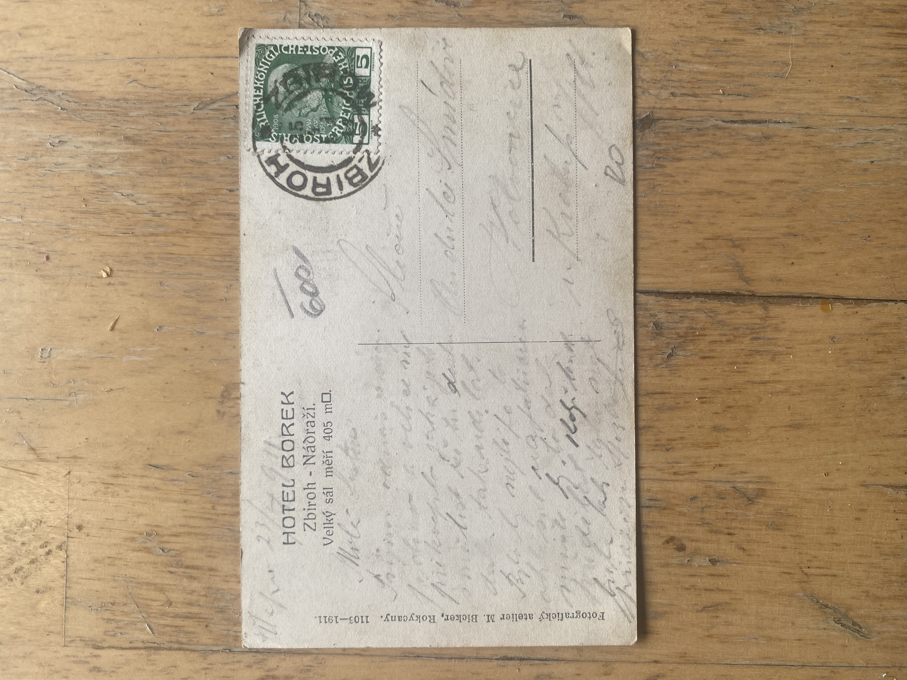
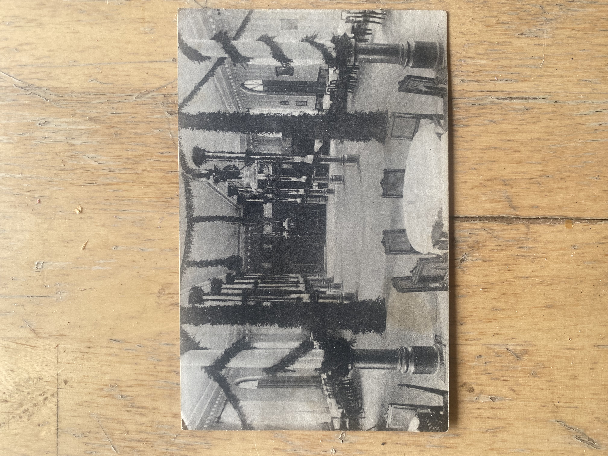

What the postcard documents
The reverse identifies the subject as HOTEL BOREK — Zbiroh-Nádraží and states: “Velký sál měří 405 m².” — “The Great Hall measures 405 m².”
The interior view shows a very large hall articulated by columns/posts, tall openings and an extensive open floor area. The postcard is important evidence not merely for the appearance of Hotel Borek, but for the scale and character of an interior space that was significant enough for its area to be advertised explicitly.
Why 405?
The unusually specific figure 405 m² is an intriguing feature of the postcard. Bethel Henry Strousberg was born into a Jewish family in Prussia and spent an important part of his early life in Britain before becoming a major industrial entrepreneur on the European continent. His biography therefore crossed Jewish and Christian cultural backgrounds as well as British and continental environments.
The prominence of the number five is interesting in a Jewish cultural context, most recognizably through the Five Books of Moses — the Torah, while Jewish mystical traditions also contain extensive traditions of numerical interpretation. Converted into imperial measure, 405 m² is approximately 4,359 square feet, or about 4,360 sq ft when rounded. Strousberg’s British experience makes the question of the original system of measurement worth investigating.
No documentary evidence has yet been identified showing that the hall’s dimensions were deliberately selected for numerical, Jewish or mystical symbolism. These relationships are therefore recorded as interpretive observations and research questions, not as evidence of architectural intent. A particularly useful future discovery would be an original architectural plan giving the hall dimensions and the units in which they were specified.
Architectural significance
At 405 m², the Great Hall was a substantial gathering space. The surviving visual evidence raises questions about its original intended functions and its relationship to Strousberg’s wider industrial and social development around Borek. The archive is investigating whether it served commercial meetings, public gatherings, company functions, visitors, celebrations or other purposes. These possible uses remain research questions until documentary evidence establishes them.
Original postcard — source photographs
These two photographs preserve the original postcard as photographed, allowing the enhanced presentation above to be checked directly against the historical source.
{kind=link}

{kind=link}

Source and preservation
The enhanced archive presentation is a derivative made to improve viewing of the historical object. The unaltered source photographs are reproduced immediately above so that the presentation and interpretation remain traceable to the original evidence.
Archive images: Property of the Stanice Zbiroh Historical Research Archive.